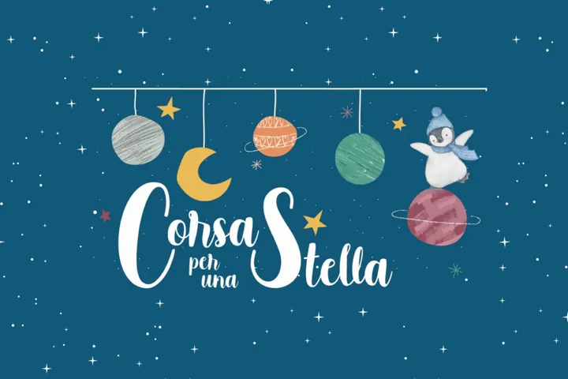

Friuli
sab 5 set · dalle 15:00
Corsa per una stella
Camminata non competitiva di 6 o 11 chilometri tra Gemona e Artegna, con finalita benefica.
 Indicazioni
Indicazioni
- Costi e prenotazioni
- Contributo di partecipazione · Partenza libera e iscrizione sul posto
- Programma
- Programma confermato. Data, fascia di partenza, percorsi e finalità sono pubblicati da PromoTurismoFVG e Visit Gemona.
- In caso di maltempo
- Nessuna indicazione specifica pubblicata.
- Note
- Evento non competitivo; ogni partecipante può procedere al proprio passo.
L’EVENTO
Descrizione completa
Camminata ludico-motoria non competitiva aperta a tutti, con due percorsi di 6 e 11 chilometri tra Gemona e Artegna. L’iniziativa ricorda la piccola Adele e sostiene la ricerca sui tumori cerebrali pediatrici dell’Area Giovani CRO di Aviano.
Evento non competitivo; ogni partecipante può procedere al proprio passo. Il ricavato è destinato alla ricerca medica pediatrica.
IL PROGRAMMA
Programma e orari
Appuntamenti raccolti dalle fonti elencate. Dove manca un orario, non è ancora disponibile in questa scheda.
Sabato 5 settembre
- 15:00–16:30 · Partenza libera
- Percorso a scelta di 6 o 11 km
- All’arrivo · pizza, bibite e musica
INFORMAZIONI UTILI
Prima di partire
- Evento non competitivo; ogni partecipante può procedere al proprio passo.
- Il ricavato è destinato alla ricerca medica pediatrica.
- Contatti: montefaeitrun@gmail.com
ORGANIZZAZIONE